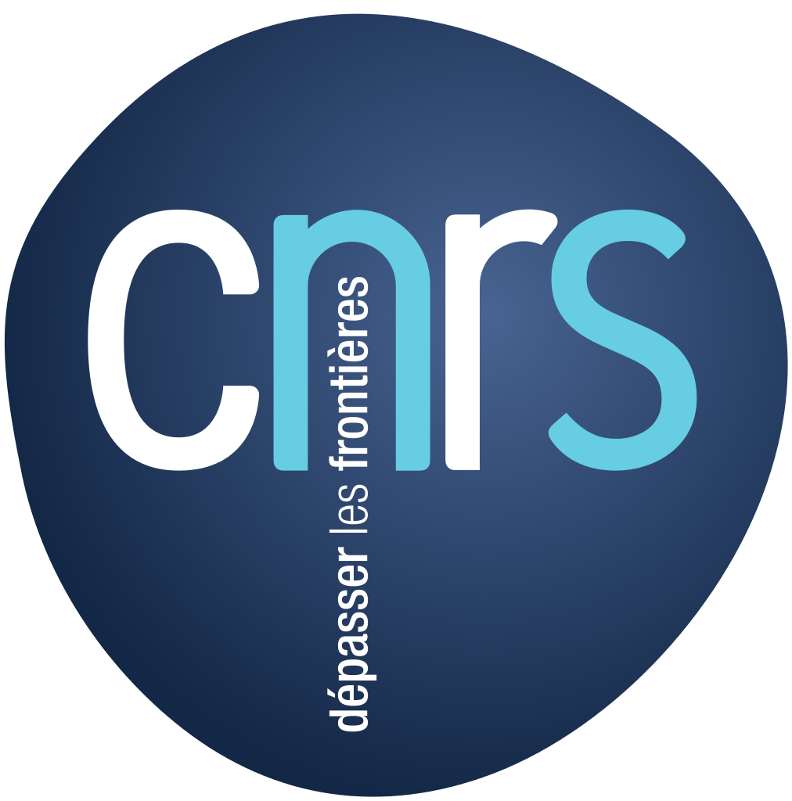
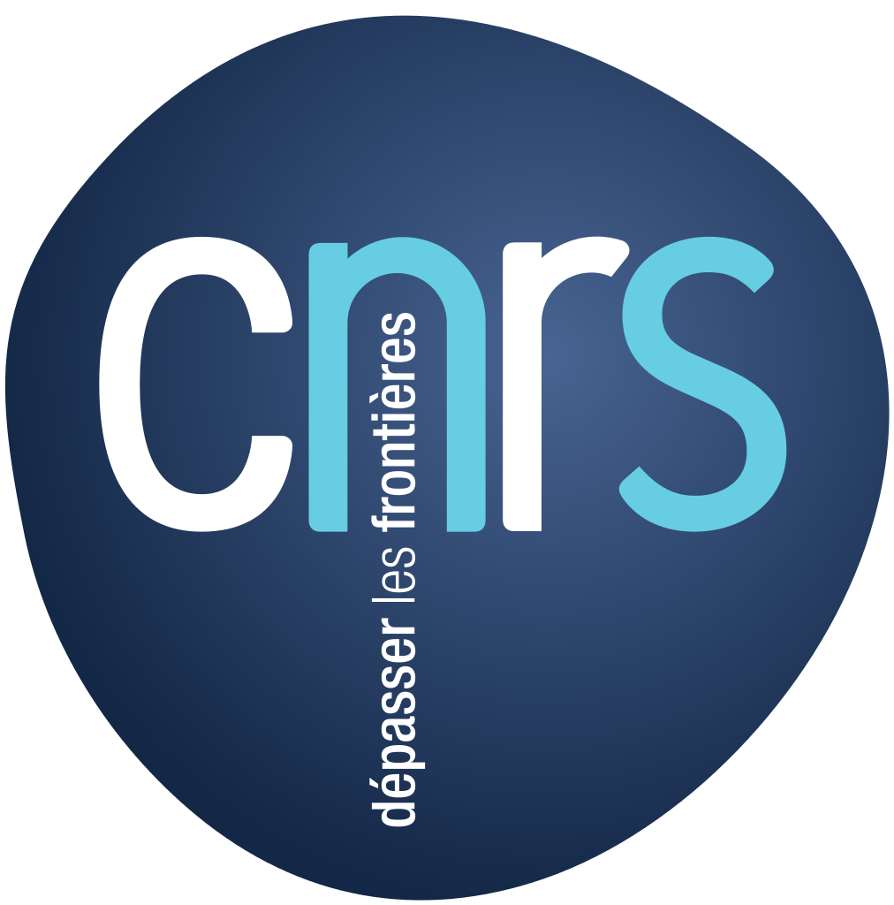

Six work packages to tackle our tasks.
Each of the three core protocols developed in NEXTLEAP will be based on sociological case-studies of users and software projects, including other CAPS projects.
The values in the protocols will emerge both from a systematization of the philosophy of the Internet (based on the work of French philosopher Bernard Stiegler) as well as a crowd-sourced discussion of net rights.
For each protocol, there will be a specification that will be both formally verified for security properties as well as an analysis in terms of privacy, interpretation and scalability. These protocols will be implemented in running code and deployed with real users, and submitted to open standards bodies such as the IETF and W3C.
They can then serve as the building blocks for other CAPS projects and wider software development. Intensive education and outreach to policy-makers, developers, academics and the general public will raise awareness of the values of decentralisation, security, and privacy – and a new kind of Internet.
NEXTLEAP is divided in the following work packages that tackle the above tasks.
- Project Management (INRIA).
- Science of Decentralized Architectures (UCL).
- Social Design and Philosophical Foundations of Decentralization (CNRS).
- Validation via Formal Modelling and Simulation (IMDEA Software Institute).
- Open Source Code and User Validation (Merlinux).
- Outreach and Dissemination (IRI).


 
